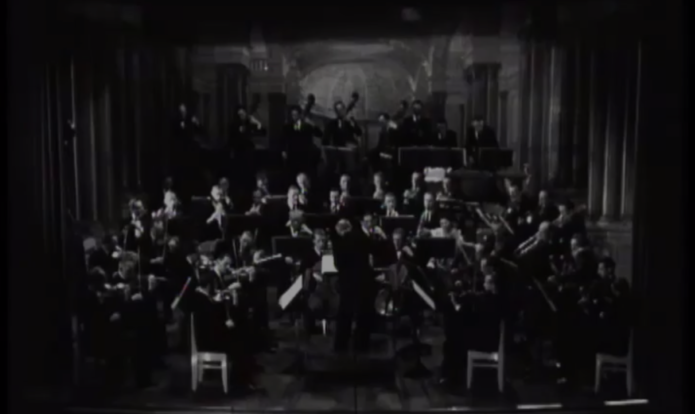
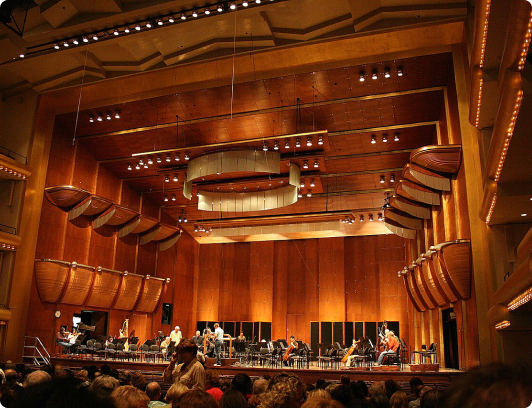

Who Has
NEW YORKPHILHARMONIC
Made Room For?
National identity and systemic discrimination always underlie major power structures throughout history. This project explores changes in representation of minority composer groups in contribution to the New York Philharmonic.
What is the New York Philharmonic Orchestra?
The Philharmonic-Symphony Society of New York is the oldest symphony orchestra existing in the United States. It was formed in 1842 and has been home to legendary performances, music directors, and conductors. The Philharmonic is currently based in David Geffen Hall in New York City, following several location changes throughout its history.
The Philharmonic has served as a safe haven for many Americans throughout history, acting as a place where people can get away to enjoy high quality music by talented musicians of their era. As a leader in musical life not only in the United States but across the globe, the Philharmonic performs internationally in regions including Europe, South America, Asia. Considering the size of the orchestra and its massive global reach, understanding whose voices are heard on stage reveal how the Philharmonic has evolved alongside an evolving society. The ensemble ultimately holds major power in deciding whose voices and works are elevated, raising the question of who the New York Philharmonic has actually made room for, both on stage and in the audience, from 1842 to today.

Our Research Questions
Who has the New York Philharmonic made room for, on stage and in the audience, from 1842 to today?
Gender Representation
How has the representation of female performers and composers in NY Philharmonic performances changed over time?
Sub QuestionComposer Frequency
How have the most frequently appearing composers changed over time, and during what time period were they most influential?
Sub QuestionWorld War I
Did World War I change how much German music the Philharmonic played, and what does it show about music as well as national identity?